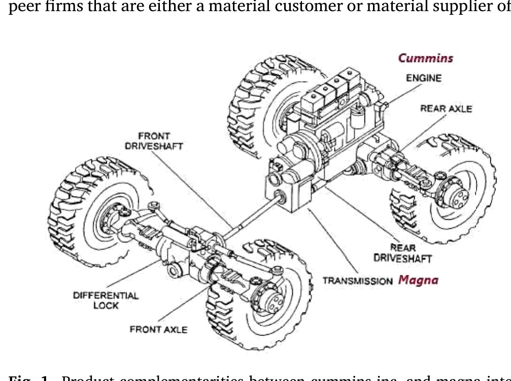
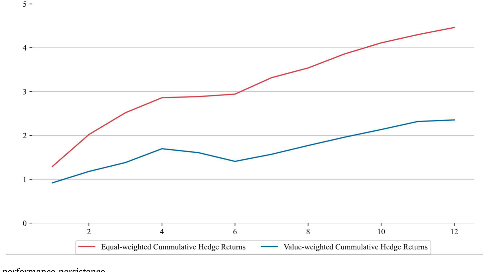
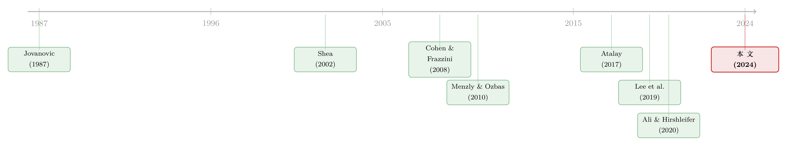

互补品的暗线：当电池涨价，芯片厂的股票为什么会先动？
本文读的是 Lee, Shi, Sun & Zhang (2024, JFE)：他们用投入产出表造出一个「生产互补度」指标 COMPL，把分属不同行业、彼此之间既不是上下游、也不是同行的两家公司连了起来。结果是——这些「互补者」的基本面同涨同跌，股价也存在明显的领先—滞后关系：买进互补者上月表现最好的那批焦点公司、卖空表现最差的那批，每月能赚到 122 个基点的六因子 alpha。而且这条收益，不是已有的「共同分析师覆盖」效应换了张脸。
1 一个被忽略的「第三种邻居」
先讲一个常识。
电池和处理器芯片，是一对互补品（complementary goods）：它们都被装进同一部智能手机里。电池技术一旦突破，人们就想要更强的芯片去发挥它；反过来，芯片性能跃升，又会逼着电池做得更耐用。于是一个朴素的推断是：电池厂的好消息，对芯片厂也是好消息。
但请注意这对公司的关系有多「别扭」——它们分属不同行业（一个做能源器件，一个做半导体），它们之间没有直接的买卖关系（电池厂不向芯片厂供货，反之亦然）。它们既不是同行（horizontal peer），也不是上下游（vertical peer）。在博弈论的教科书里，这种「我的产量上去会让你的产量也更值钱」的关系，叫策略互补 (strategic complementarity)；这两家公司，就是彼此的互补者（complementors）。
宏观经济学家早就把这种「互补」当回事了。问题是，到了股票市场上，这第三种邻居——既非同行、又非上下游的互补者——几乎从来没有被单独拎出来研究过。我们熟悉同行之间的动量、熟悉客户—供应商之间的领先滞后，可一旦两家公司的联系既不写在它们的客户名单上、也不写在它们的行业代码里，投资者还看得见吗？价格还会同步吗？
这就是本文要回答的问题。
一句话概括全文的张力：一种最隐蔽、最不「显眼」的经济联系，会不会恰恰是最被市场低估的那一条？
2 先把「互补」量出来：COMPL 的构造
要研究互补者，第一步得先有一把尺子，能给任意两家公司打一个「互补度」的分。这是全文最关键的一块积木，我们慢一点讲。
作者的想法很直接：两家公司互补的程度，取决于它们的产出在多大程度上被同一批下游行业当作互补的投入买走。于是对每一家公司 \(i\)、每一期 \(t\)，他们先用美国经济分析局 (Bureau of Economic Analysis, BEA) 的行业级投入产出表 (Input-Output table)，加上每家公司在 Compustat 历史分部 (segment) 数据库里报告的「各行业销售占比」，造出一个产出流向量 (output flow vector)：
$$ OF_{it} = (O_{it1},\, O_{it2},\, \ldots,\, O_{itn},\, \ldots,\, O_{itN}) $$
这里 \(N\) 是所有下游行业的个数，每个分量 \(O_{itn}\) 表示公司 \(i\) 的销售中，有多大比例最终流向了行业 \(n\)。对单一分部的公司，这个向量就等于它所在行业的流向；对多分部公司，则按各分部占公司总销售的比重加权——所以这把尺子的精度，天然受限于公司披露分部信息的颗粒度。
有了两家公司各自的产出流向量，互补度就定义成它们的余弦相似度 (cosine similarity)：
直觉很清楚：如果两家公司的产品大量流向同一批下游行业（比如都被手机厂买走），它们的产出流向量就「指向同一个方向」，余弦值接近 1，互补度高；如果流向毫无交集，余弦值接近 0。这个余弦相似度的构造，思想上接续了 Jaffe (1986) 用专利分布度量技术距离的老办法，但把它第一次用来度量跨行业的产出互补距离，这是本文方法论上的新意。
为了减少噪声，作者只保留互补度最高的那一小撮配对，并按强弱分三档：强互补者（Strong，按 COMPL 排在所有配对的前 2%）、中互补者（Medium，接下来的 2%）、弱互补者（Weak，第三档 2%）。

Figure 1: Product complementarities between cummins inc. and magna interna- average of 103 complementors each. The pairwise product comple-
最关键的一步在于减法：在为每家「焦点公司」(focal firm) 找互补者时，作者剔除所有与它同属 SIC 四位行业的公司（同行），以及所有与它有实质客户—供应商关系的公司（上下游）。这一刀切得很狠，却切得很必要——它保证了后面所有结果，都干净地落在「跨行业、非上下游」这条暗线上，而不会被同行动量或客户—供应商效应污染。作者还顺带说明：如果不做这个剔除、把同行和上下游都放回来，所有相关性结果只会更强。也就是说，他们是主动选了一条更难、却更干净的路。
3 第一问：互补者，真的「同呼吸」吗？
尺子有了，第一个自然的问题是：这把尺子量出来的「互补」，到底是不是真的经济联系？还是只是数据上的巧合？
作者用了七个维度的基本面活动来检验：经营层面的盈利能力、销售增长，投资层面的资本支出、研发、专利创新，融资层面的市场杠杆、外部融资。结论很一致：COMPL 越接近的两家公司，这七项基本面的同向变动越强；而且这种同向性，是在控制了行业层面的共同波动、以及公司与年度双向固定效应之后依然存在的。换句话说，这不是「同行业一起好」的老故事——把行业层面的共振扣掉之后，互补者之间仍然有一层独立的、属于它们自己的联动。
更漂亮的是一个「随距离衰减」的模式：从强互补者到中互补者再到弱互补者，相关性单调地、一档一档地变弱。这正好呼应了 Shea (2002) 那句被作者引用的话——「互补性不只是说 A 应该与 B 同动，它意味着 A 与 B 同动的幅度，应当取决于它们联系的强度」。一个度量如果是真的，它就该有这种「越近越像」的剂量—反应关系。COMPL 通过了这一关。
不止基本面。作者还发现，互补者之间的月度股票收益和季度分析师盈利预测修正也正相关——这是在控制了公司规模、账面市值比、公司自身的滞后月收益、以及中期价格动量之后得到的。到这一步，「互补者是经济上真实相连的公司」这个前提，算是站住了。
4 反转：价格，没有同步更新
如果市场是有效的，故事到这里就该结束了——既然互补者经济上相连，理性的价格会瞬间把这层联系定进去，谁也别想从中赚钱。
但反转恰恰出现在这里。
作者构造了一个对冲组合：每个月初，看每家焦点公司的（前 2% 强）互补者们上个月的收益，买进互补者表现最好的那批焦点公司，卖空互补者表现最差的那批。如果价格是瞬时更新的，这个组合不该赚钱，因为用的全是上个月就已公开的信息。
结果呢？等权组合每月赚 130 个基点（t = 6.01），市值加权组合赚 92 个基点（t = 3.97）。扣掉常见风险因子几乎不影响：六因子（Fama-French 五因子加 Carhart 动量）alpha，等权 122 个基点（t = 5.95），市值加权 68 个基点（t = 3.04）。考虑到做多和做空的公司分属不同行业，这个量级是相当惊人的。作者给它起了个名字：互补者动量 (complementor momentum)。
而且这条收益同样遵守「随距离衰减」：强互补者组的三因子 alpha 是每月 1.34%，到了中互补者降到 0.58%（t = 2.88），弱互补者 0.50%（t = 2.74）——后两者虽然仍显著为正，但预测力可靠地弱于强互补者。一个度量，既能预测基本面的同步幅度，又能以同样的「剂量—反应」节奏预测收益，这种内部一致性，比任何单一的 t 值都更有说服力。
那这条 alpha 能持续多久？作者画出了对冲组合的业绩持续性——信息并不是在一个月内被吸收干净的，预测力在随后的几个月里逐步衰减，这正是「价格慢慢爬向正确水平」该有的样子。

Figure 2: Hedge portfolio performance persistence
5 真正难缠的对手：共同分析师覆盖
讲到这里，一个挑剔的读者会立刻举手：这种「经济联系→领先滞后」的故事，文献里已经一大把了，你这个会不会只是某个已知效应换了个马甲？
这正是本文用力最重的地方，而它最难缠的对手，是 Ali and Hirshleifer (2020，下称 AH)。AH 有一个极强的论断：各种动量溢出效应——同行的、上下游的、技术相近的——本质上是同一个现象，都被「共享分析师覆盖」(shared analyst coverage) 这一个变量统一解释了；一旦控制住共同分析师覆盖，其他溢出效应都变得不显著。他们的原话是：「动量溢出效应是一个被共享分析师覆盖所捕捉的统一现象。」
如果 AH 是对的，本文的互补者动量也该被它吃掉。可问题在于：互补者按构造就来自不同行业，而分析师通常只盯着一个或几个相近行业——所以互补者之间，本就很少有共同的分析师覆盖。这给了作者一个绝佳的切口。
作者把互补者分成两组：一组与焦点公司至少共享一位分析师，另一组完全没有共同覆盖。结果是关键的：当互补者全部来自无共同覆盖那一组时，策略依然能预测收益（月度 alpha = 1.17，t = 5.99），而且预测力在第 \(t\)、\(t+1\)、\(t+2\) 个月都显著。这就直接说明：互补者动量不是AH 效应的重新发现。
有意思的是另一半：有共同覆盖的那组，在第 \(t\)、\(t+1\) 月的同步性甚至更高，但到 \(t+1\) 之后就不再有预测力。把两半拼起来，故事就完整了——共同分析师的存在，加速了互补者消息向焦点公司价格的整合；但即便没有这条加速通道，消息依然会沿着互补网络慢慢渗透，只是渗透得更慢。分析师是「快车道」，但不是唯一的路。
（关于「经济联系会拖慢、而非加速消息」的这层张力，债券市场里也有一个漂亮的对照——评级一起动、股价却慢半拍，可参见《评级一起动，股价却慢半拍——藏在债券市场里的「经济联系」》；而「共同股东反而让消息扩散得更慢」的镜像故事，见《被「同一批股东」拖慢的消息》。）
为稳妥起见，作者还做了一系列「排除法」：控制滞后的供应商与客户收益（Cohen and Frazzini, 2008；Menzly and Ozbas, 2010）、伪集团收益（Cohen and Lou, 2012）、技术同行收益（Lee et al., 2019），主结果在所有这些检验中都稳健。对 Menzly and Ozbas (2010) 这个同样用 BEA 数据、同样报告领先滞后的「近邻」，作者专门做了 5×5 双重排序：在滞后客户收益的每一个五分位里，互补者多空组合都给出显著为正的收益（t 值从 4.8 到 11.2）。互补者效应，确实独立于客户—供应商效应。
6 为什么慢？注意力的四张面孔
既然价格没有瞬时更新，最后一个问题是：慢，慢在哪里？
作者的解释落在「投资者有限注意力 (limited attention)」上——这条经济联系实在太隐蔽了：互补者不是同行、不是上下游，关系不写在财报里、不出现在同一份研报中、也不像地理或行业那样「一眼可见」。它可能是上市公司之间最强、却最不被察觉的一种联系。如果有限注意力是领先滞后的驱动力，那么这条最隐蔽的联系，理应产生最顽固的滞后。
横截面证据支持了这个故事，而且支持得很整齐。领先滞后效应更强，当：(a) 互补联系本身更强（强互补者）；(b) 焦点公司在网络中度中心性 (degree centrality) 更高（连着更多互补者）；(c) 焦点公司更容易被投资者忽视（规模更小、分析师覆盖更少、机构持股更低）；(d) 焦点公司更难套利（异质性收益波动更高）。四张面孔，都指向同一个机制——价格的迟钝，正发生在「最该被忽略、最难被纠正」的角落。
作为收尾的一记直拳，作者用专利公告做了一个直接的信息传递实验。每周二美国专利局公布新授权专利，Kogan et al. (2017) 发现专利公告日前后有显著的股票交易。作者算出焦点公司在专利公告两日窗口的累计异常收益 (Patent CAR)，再去看它的互补者同月收益如何反应：两者强正相关，且按强、中、弱互补者单调递减。更进一步，焦点公司的 Patent CAR 能可靠地预测强互补者下个月的收益，但对中、弱互补者没有预测力。这等于把整条因果链摊开了：一个公司层面的真实冲击（专利），确实在沿着互补网络往外传，而且没有被瞬时定进互补者的价格里。
7 文献脉络
把这篇论文放回它的来路，会看得更清楚。
最上游是宏观与微观经济学对生产网络的兴趣。Jovanovic (1987) 论证了足够强的微观冲击可以汇聚成总量风险；Shea (2002) 与 Conley and Dupor (2003) 用部门级数据确认了「互补性越强、同动越强」这一剂量—反应；到 Atalay (2017)，一个多行业一般均衡模型显示，部门冲击能解释总产出增长一半以上的波动，而其威力大量来自二阶矩联系——互补行业的冲击彼此强化，而非简单的上下游传导。这一脉给了本文最硬的理论靠山。
另一条上游是资产定价里的「动量溢出」实证。Cohen and Frazzini (2008) 开了头，发现客户—供应商之间的收益领先滞后；此后 Menzly and Ozbas (2010)、Cohen and Lou (2012)、Hoberg and Phillips (2018)、Lee et al. (2019) 把各种「经济联系」都试了一遍。直到 Ali and Hirshleifer (2020) 抛出「共同分析师覆盖统一一切」的强论断，几乎给这条文献画了句号。

本文的位置就在两条河的交汇处：它从宏观的生产互补理论里取来「互补」这个被资产定价忽略的构念，造出 COMPL，然后在 AH 画下的句号后面，硬是续上了一句——有一种经济联系，恰恰因为它跨行业、不被分析师覆盖，才逃过了 AH 的统一解释。它既给宏观理论补上了最缺的微观、高频证据，又在动量溢出的版图上插下了一面新旗。
（沿着「不同种类的邻居各自如何定价」这条线，还可参见《强邻、弱邻，和你站的位置：被「折叠」起来的同行效应》。）
8 评论与延伸（Q&A + 研究方向）
(a) 几个可能的疑问
Q：COMPL 和「客户—供应商联系」到底差在哪？两家公司不也是因为下游共同需求才相连吗？
差在「有没有直接交易」。客户—供应商是一阶的、直接的买卖关系（A 卖货给 B）；互补者是二阶的、间接的——A 和 B 谁也不卖给谁，只是它们的产品被同一个下游 C 一起买走、互相增益。本文专门剔除了所有同行与上下游配对，并用对 Menzly and Ozbas (2010) 的双重排序证明：在每一档滞后客户收益里，互补者组合都仍显著为正。两者是不同的暗线。
Q：会不会只是「单一行业」效应？高 COMPL 的公司其实偷偷属于同一个广义行业？
不太可能。所有结果都剔除了同 SIC 四位行业的公司，并控制了行业层面共同波动与年度固定效应。扣掉行业共振之后剩下的联动，按定义就不是行业效应。
Q：122 个基点的 alpha，会不会只是数据挖掘出来的、没法复制的「纸面收益」？
它有几条「内部一致性」的护栏：随互补距离单调衰减（强 1.34% > 中 0.58% > 弱 0.50%）、在多个滞后月份持续、扣除六因子后依旧显著、并独立于供应商/客户/伪集团/技术同行等已知效应。这种「同一个变量同时驱动基本面同步与收益预测、且剂量—反应一致」的结构，比单点 t 值更难靠运气造出来。
Q：既然 AH 说共同分析师覆盖统一了一切，本文怎么逃脱的？
靠「构造上的正交」。互补者按定义来自不同行业，而分析师按行业分工，所以互补者天然很少共享分析师。把无共同覆盖的子样本单拎出来，策略仍给出 1.17% 的月 alpha（
t = 5.99），直接证明它不在 AH 的解释范围内。反过来，有共同覆盖的那组消息整合更快、\(t+1\) 后就没了预测力——这反而印证了分析师是「加速器」而非「全部」。
Q：这套结果对市场有效性是「证伪」吗？
是温和的证伪：价格最终会反映互补者信息（基本面与同期收益正相关），但反映得慢，慢到可以用上月公开信息赚钱。它支持的是有限注意力下的「渐进信息扩散」，而不是价格完全不反应。
Q：度中心性高的公司效应更强，这和「小公司效应更强」矛盾吗？
不矛盾，它们刻画的是两件事。度中心性高 = 焦点公司连着更多互补者，意味着有更多条暗线把消息传给它，可被忽略的信息量更大；小公司、低覆盖、高异质波动 = 这些消息更容易被忽略、更难被套利纠正。一个是「信息供给多」，一个是「纠错能力弱」，两者叠加才是滞后最严重的地方。
(b) 几个可能的研究问题与提案
1. 互补者动量在公司债市场存在吗？
【经济故事】如果互补冲击是真实的基本面冲击，它首先冲击的是违约概率与现金流，理应同时定价进债券利差。债券市场参与者更机构化、注意力分布与股票不同，扩散速度可能两样。 【可行性】中。需要
TRACE债券交易、Mergent FISD发行信息，把本文的COMPL（作者已公开年度配对分数）映射到发债公司，构造互补者利差变动的领先滞后。识别上可沿用本文的剔除同行/上下游做法。难点是债券交易稀疏、价格噪声大。
2. 外资持有人会放大还是抚平互补者动量？
【经济故事】本文机制是「有限注意力」。外资对美国公司的跨行业互补联系尤其陌生（呼应 Huang 2015「投资者低估海外信息」），可能扩散更慢；但外资也常是被动指数资金，未必交易这类信号。方向是经验问题。 【可行性】中。需要
13F机构持股、或FactSet/TIC外资持股数据，按焦点公司外资持股比例分组，看互补者动量强弱。识别清晰，数据可得，主要工作量在持股口径的清洗。
3. 互补网络的「流动性溢出」：互补者冲击会传染流动性吗？
【经济故事】文献多看收益与基本面溢出，但若做市商也有限注意力、对互补联系反应迟钝，互补者的大冲击可能延迟地恶化焦点公司的买卖价差与深度。这把「信息扩散」延伸到「流动性扩散」。 【可行性】中。需要
TAQ日内数据算价差/深度/Amihud，结合COMPL配对做领先滞后回归。识别上可用专利公告（本文已验证的外生冲击）作为事件，看互补者流动性指标在事件后的反应。
4. 用大模型解析的产品级互补，能否打败基于 BEA 的 COMPL？
【经济故事】本文
COMPL受限于分部披露颗粒度（多分部公司只能按行业加权）。若直接从产品描述/年报文本里抽取「谁与谁互补」，可能更精细、更及时，也能给互补强度一个连续度量。 【可行性】高。文本数据（10-K、产品手册）易得，LLM 抽取产品互补关系技术上已成熟（可对照《让大模型读遍全球年报：一张「谁与谁相关」的世界商业网》）。难点是验证：得证明文本互补度在解释基本面同动上增量于COMPL，而非重复它。
5. 互补者动量在不同货币政策/经济周期状态下是否时变？
【经济故事】有限注意力可能是顺周期的——衰退或高不确定时期，投资者注意力被宏观吸走，对隐蔽的微观互补联系更迟钝，滞后应更严重。 【可行性】中。把月度对冲组合收益对衰退虚拟变量、VIX、政策不确定指数做交互回归即可，数据全部现成。识别担忧是这些状态变量与已知动量崩溃高度相关，需小心区分。
9 我的判断
这篇论文最大的贡献，是把一个宏观经济学里讲了几十年、却在资产定价里近乎缺席的构念（生产互补）操作化成了一个可计算、可交易、可公开下载的公司对指标，并且用一连串干净的减法（剔同行、剔上下游、按距离分档、分共同覆盖子样本）把它和所有已知的网络效应一一区隔开。尤其是直面 AH「统一论」并用「构造上正交于分析师覆盖」的子样本把它顶住，这一手既聪明又诚实——它没有声称推翻 AH，而是精确地指出了 AH 射程之外的那块地。专利公告那个直接传递实验，更是把「信息确实在网络上传、且传得慢」这条因果链摊开给人看，这是同类文献里少见的硬证据。
要说对识别的担忧，我有两点。其一，COMPL 的精度被分部披露的颗粒度绑住了：多分部公司只能按行业流向加权，单分部公司干脆假定等于行业流向——这意味着在很多公司上，COMPL 其实是「行业对行业」的互补度，而非「公司对公司」，那么剔除同行之后剩下的，究竟有多少是真正的公司层面互补、有多少仍是更细的行业共振，难以完全分清。其二，BEA 投入产出表更新缓慢、结构稳定，COMPL 的时间变异主要来自公司销售构成的变化，这把尺子捕捉的更像是「长期结构性互补」，对快速变化的新兴互补关系（比如新技术催生的新互补品）可能反应迟钝——而恰恰是这些最新、最隐蔽的联系，按本文自己的逻辑，最该有最强的滞后。
后续我最想看到的，是把这条暗线接到信用市场和流动性上：互补冲击若真是基本面冲击，它理应先动违约概率、再动债券利差，且因债券市场注意力结构不同而呈现不一样的扩散速度；以及用更细的文本/产品级互补去检验 COMPL 到底丢掉了多少信息。如果这些都成立，「互补者」就不只是一个新的选股信号，而会成为理解冲击如何在整个资本市场里跨行业传播的一把通用钥匙。
参考文献
- Ali, U., Hirshleifer, D. (2020). Shared analyst coverage: unifying momentum spillover effects. Journal of Financial Economics 136(3), 649–675.
- Atalay, E. (2017). How important are sectoral shocks? American Economic Journal: Macroeconomics 9(4), 254–280.
- Cohen, L., Frazzini, A. (2008). Economic links and predictable returns. Journal of Finance 63(4), 1977–2011.
- Cohen, L., Lou, D. (2012). Complicated firms. Journal of Financial Economics 104(2), 383–400.
- Conley, T.G., Dupor, B. (2003). A spatial analysis of sectoral complementarity. Journal of Political Economy 111(2), 311–352.
- Hoberg, G., Phillips, G. (2018). Text-based industry momentum. Journal of Financial and Quantitative Analysis 53(6), 2355–2388.
- Jaffe, A.B. (1986). Technological opportunity and spillovers of R&D: evidence from firms' patents, profits, and market value. American Economic Review 76, 984–1001.
- Jovanovic, B. (1987). Micro shocks and aggregate risk. Quarterly Journal of Economics 102(2), 395–410.
- Kogan, L., Papanikolaou, D., Seru, A., Stoffman, N. (2017). Technological innovation, resource allocation, and growth. Quarterly Journal of Economics 132(2), 665–712.
- Lee, C.M.C., Sun, S.T., Wang, R., Zhang, R. (2019). Technological links and predictable returns. Journal of Financial Economics 132(3), 76–96.
- Menzly, L., Ozbas, O. (2010). Market segmentation and cross-predictability of returns. Journal of Finance 65(4), 1555–1580.
- Shea, J. (2002). Complementarities and comovements. Journal of Money, Credit and Banking 34(2), 412–433.